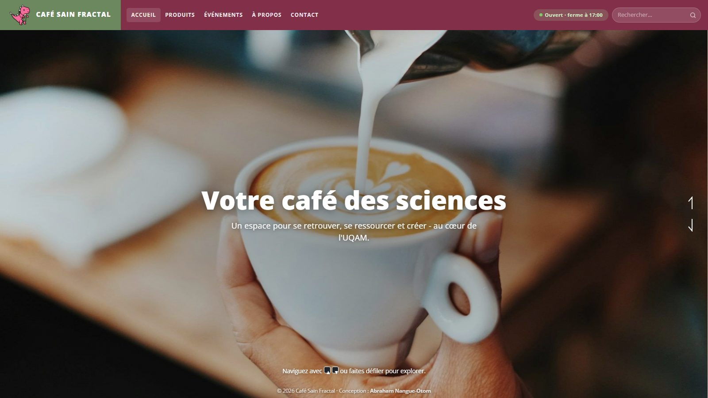

Retour aux projets
Café Sain Fractal
Site web du café, en ligne et utilisé au quotidien.

Site vitrine du Café Sain Fractal, dont je suis responsable : présentation du lieu, catégories de produits et annonce des événements, avec expiration automatique des événements passés.
J'y ai branché un formulaire de contact, la base de données pour le contenu, et le référencement : balises Open Graph, métadonnées et vérification Google Search Console.